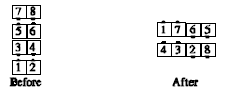

From eight chain thru: All Right Pull By; outsides Courtesy Turn and Veer Left; centers Left Touch, and the centers Courtesy Turn the ends to finish facing the same way the centers were originally facing, then As Couples Extend, to form two-faced lines.
